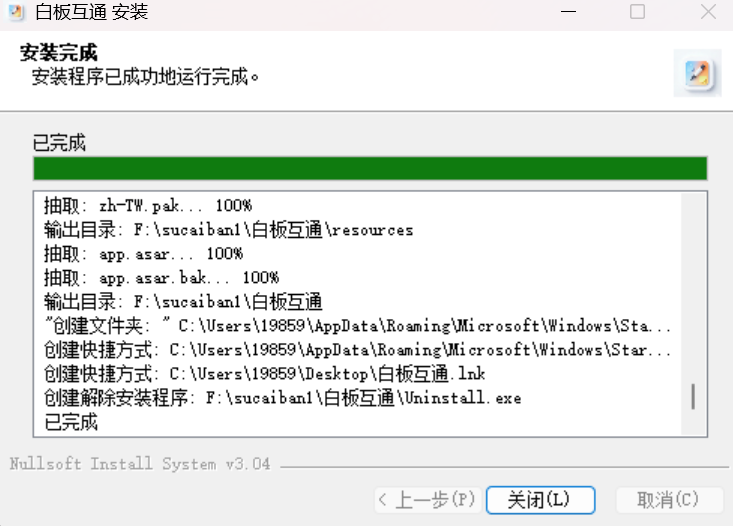
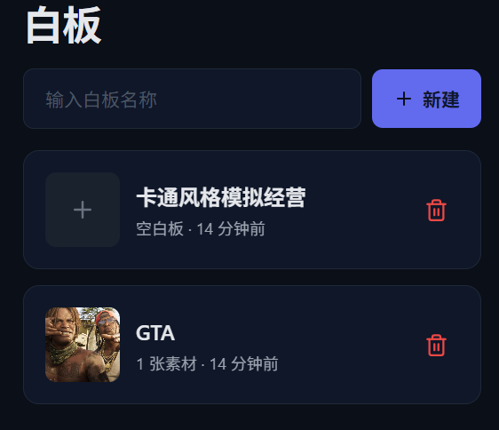

📖 背景
在日常工作和创作中，经常需要在不同设备之间快速传递灵感、草图、素材和代码片段。市面上现有的参考图管理工具要么操作繁琐，要么功能过于臃肿，要么不支持跨端同步。更麻烦的是，在之前实习期间，公司对员工安装软件有严格限制，很多第三方工具根本无法使用。
于是决定自己动手，借助 AI 辅助开发一个轻量级、双端互通、无需安装的参考图管理工具板。面向设计师和开发者，在手机和电脑上都能流畅使用，打开浏览器就能用，完美绕过公司软件安装限制。
整个开发过程大量依赖 AI 辅助——从功能设计、UI 布局到代码实现，AI 在各个环节都发挥了重要作用。这也是对"AI 能否高效辅助实际工具开发"的一次实战验证。
🎯 功能设计
参考图管理工具板的核心定位是"极简但实用"，不追求大而全，只聚焦高频使用场景：
核心功能
- 双端互通：手机和电脑使用同一套代码，响应式布局自适应屏幕尺寸，两端操作体验一致
- 多媒体素材添加：支持图片、视频、代码片段等多种素材类型拖入或粘贴到工具板
- 复制粘贴：支持从外部直接复制内容粘贴到工具板，也支持工具板内元素的复制粘贴
- 保存与下载：工具板内容可保存为本地文件，也可导出为图片下载
- 常驻屏幕置顶：可设置工具板窗口始终置顶，方便对照参考图或代码进行创作
💡 设计理念
- 零安装：浏览器直接打开，不需要任何安装步骤，彻底绕过公司软件限制
- 轻量化：功能聚焦，不堆砌，打开即用，操作路径短
- 跨端一致：手机端和电脑端功能对等，无缝切换设备继续工作
- 面向创作者：设计师放参考图、开发者贴代码、策划贴文档，覆盖创作全流程
🤖 AI 辅助开发过程
整个参考图管理工具板的开发完全依赖 AI 辅助完成，从需求分析到代码实现，AI 在以下环节发挥了关键作用：
需求梳理与架构设计
- 通过与 AI 的多轮对话，逐步明确核心功能范围和优先级
- AI 帮助梳理了跨端适配的技术方案（响应式布局 + 触摸事件兼容）
- 对工具板数据存储方案进行了分析对比（localStorage vs IndexedDB vs 文件导出）
代码生成与调试
- UI 布局、拖拽交互、素材管理、导出功能等核心模块均由 AI 生成
- 跨端兼容性问题（如移动端触摸事件、不同浏览器的 API 差异）通过 AI 辅助排查和修复
- CSS 响应式断点和移动端适配方案由 AI 提供建议并实现
效率提升
- 从零到可用的原型，开发周期大幅缩短
- 遇到不熟悉的 API（如 Clipboard API、Screen Wake Lock 等），AI 能快速提供示例代码
- 样式调整和微调效率极高，不需要反复查阅文档
✨ 实际效果与使用场景
工具开发完成后，在实际使用中验证了以下几个高频场景：
🎨 设计师场景
- 手机拍下草图或参考图 → 直接粘贴到工具板 → 电脑端同步查看
- 收集灵感素材时，将网页截图拖入工具板自由排列，对照创作
- 工具板设置置顶，在做 3D 模型时对照参考图进行雕刻
💻 开发者场景
- 将代码片段粘贴到工具板，在不同设备间快速转移代码
- 整理 API 文档或接口说明时，分区域放置不同类型的素材
- 工具板作为临时"草稿纸"，记录调试过程中的关键信息
📋 日常场景
- 手机端快速记录灵感 → 电脑端打开继续编辑
- 开会时用手机做笔记 → 回到工位电脑上继续整理
- 临时需要一个"粘贴板"在不同应用间中转内容
🖥️ 测试演示
以下是电脑端素材管理白板工具的实际运行测试视频，展示了素材拖入、排列、编辑等核心交互流程：
电脑端素材管理白板工具运行测试（2026年7月）
📱 App 端开发进度
目前 App 端正在开发中，以下是电脑端 App 截图：

App 电脑端下载进度（2026年7月）
📱 手机端测试截图
手机端界面适配测试，验证小屏幕下的交互体验和布局效果：


手机端界面测试（2026年7月）
💡 AI让"不满意就自己做一个"从一句气话变成了可执行的方案。以前遇到工具不好用只能忍，现在可以借助AI搭建一个更适合自己的替代品。